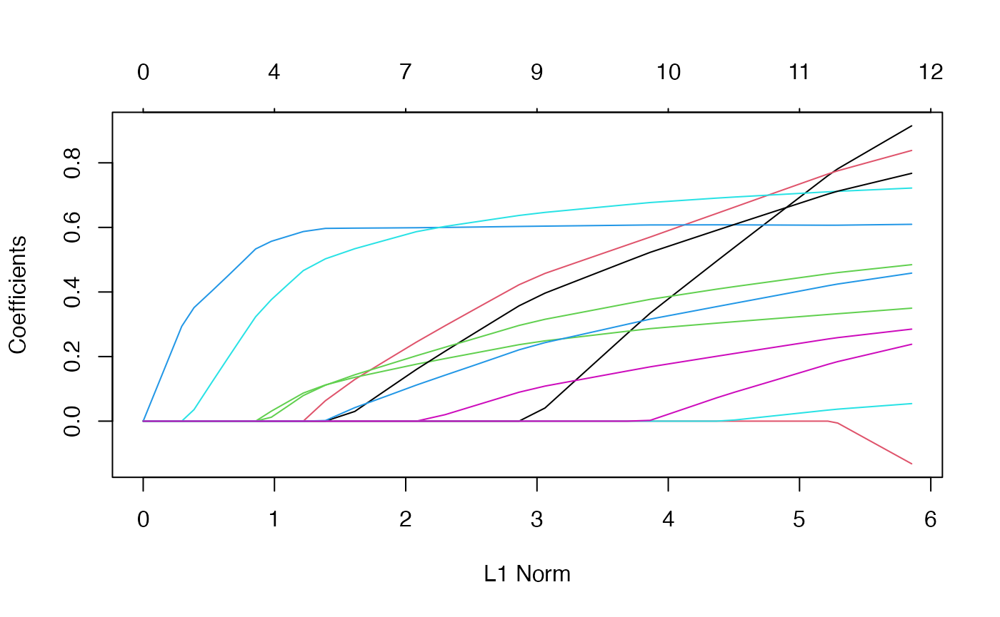
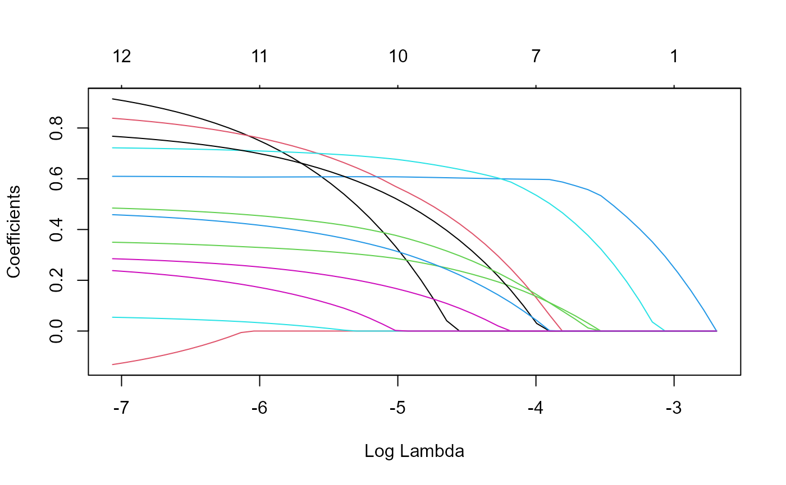
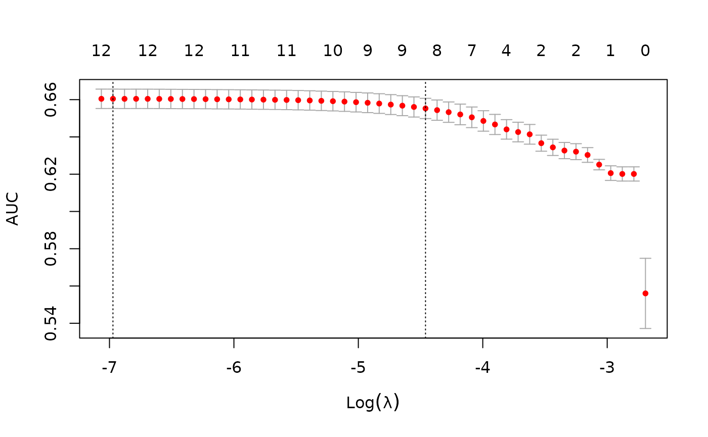
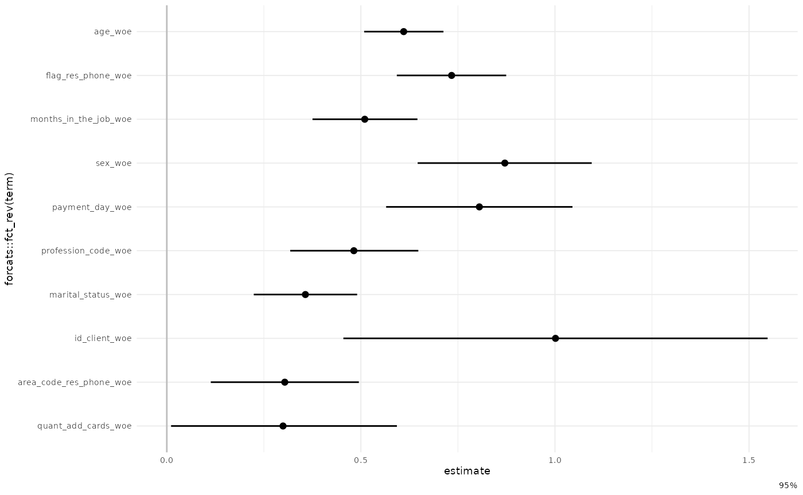

feature-selection.Rmd
library(risk3r)
library(broom)
library(dplyr)
#>
#> Attaching package: 'dplyr'
#> The following objects are masked from 'package:stats':
#>
#> filter, lag
#> The following objects are masked from 'package:base':
#>
#> intersect, setdiff, setequal, union
library(ggplot2)
theme_set(theme_minimal(base_size = 7, base_family = ""))
data("credit_woe")Let fit a very raw model to check:
train_data <- head(credit_woe, 20000)
test_data <- tail(credit_woe, 20000)
model_raw <- glm(bad ~ ., family = binomial, data = train_data)
broom::tidy(model_raw)
#> # A tibble: 14 × 5
#> term estimate std.error statistic p.value
#> <chr> <dbl> <dbl> <dbl> <dbl>
#> 1 (Intercept) -1.39 0.0185 -75.3 0
#> 2 id_client_woe 1.00 0.279 3.59 3.25e- 4
#> 3 sex_woe 0.880 0.115 7.66 1.89e-14
#> 4 marital_status_woe 0.361 0.0683 5.28 1.32e- 7
#> 5 age_woe 0.614 0.0543 11.3 1.14e-29
#> 6 flag_res_phone_woe 0.729 0.0725 10.1 8.34e-24
#> 7 area_code_res_phone_woe 0.302 0.0974 3.10 1.93e- 3
#> 8 payment_day_woe 0.804 0.123 6.56 5.33e-11
#> 9 residence_type_woe -0.207 0.223 -0.930 3.52e- 1
#> 10 months_in_residence_woe -0.0302 0.153 -0.198 8.43e- 1
#> 11 months_in_the_job_woe 0.501 0.0706 7.10 1.25e-12
#> 12 profession_code_woe 0.481 0.0843 5.71 1.14e- 8
#> 13 personal_net_income_woe 0.0646 0.105 0.613 5.40e- 1
#> 14 quant_add_cards_woe 0.273 0.154 1.77 7.61e- 2
# some parameter are negative, multicollinearity
broom::tidy(model_raw) %>% filter(estimate <= 0 | p.value > 0.05)
#> # A tibble: 5 × 5
#> term estimate std.error statistic p.value
#> <chr> <dbl> <dbl> <dbl> <dbl>
#> 1 (Intercept) -1.39 0.0185 -75.3 0
#> 2 residence_type_woe -0.207 0.223 -0.930 0.352
#> 3 months_in_residence_woe -0.0302 0.153 -0.198 0.843
#> 4 personal_net_income_woe 0.0646 0.105 0.613 0.540
#> 5 quant_add_cards_woe 0.273 0.154 1.77 0.0761
gg_model_coef(model_raw) +
labs(title = "Yikes!")
#> Waiting for profiling to be done...
From https://glmnet.stanford.edu/articles/glmnet.html
There 2 option for S: lambda.min and lambda.1se , this last option you have a more regularized model.
This wrapper around the glmnet package take a model as input, then return the model with the variables non zero from the glmnet::cv.glmnet() function according with the selected S option. This function reorder the variables in the same order the coefficient in the glmnet model turn to non zero (check the plots when run this funtion).
model_fsglmnet <- featsel_glmnet(model_raw, S = "lambda.1se", trace.it = FALSE)
#> Warning: `as.tibble()` was deprecated in tibble 2.0.0.
#> Please use `as_tibble()` instead.
#> The signature and semantics have changed, see `?as_tibble`.
broom::tidy(model_fsglmnet)
#> # A tibble: 9 × 5
#> term estimate std.error statistic p.value
#> <chr> <dbl> <dbl> <dbl> <dbl>
#> 1 (Intercept) -1.39 0.0185 -75.4 0
#> 2 age_woe 0.616 0.0520 11.9 1.88e-32
#> 3 flag_res_phone_woe 0.743 0.0716 10.4 3.01e-25
#> 4 marital_status_woe 0.376 0.0674 5.58 2.41e- 8
#> 5 months_in_the_job_woe 0.521 0.0687 7.59 3.12e-14
#> 6 sex_woe 0.822 0.112 7.35 2.04e-13
#> 7 profession_code_woe 0.493 0.0840 5.87 4.32e- 9
#> 8 payment_day_woe 0.805 0.122 6.57 4.87e-11
#> 9 area_code_res_phone_woe 0.312 0.0973 3.20 1.37e- 3
broom::tidy(model_fsglmnet) %>% filter(estimate <= 0 | p.value > 0.05)
#> # A tibble: 1 × 5
#> term estimate std.error statistic p.value
#> <chr> <dbl> <dbl> <dbl> <dbl>
#> 1 (Intercept) -1.39 0.0185 -75.4 0
gg_model_coef(model_fsglmnet)
This is a wrapper for stats::step but the start point model is the null one response ~ 1.
model_fsstep <- featsel_stepforward(model_raw, trace = TRUE)
#> Start: AIC=19917.88
#> bad ~ 1
#>
#> Df Deviance AIC
#> + age_woe 1 19316 19320
#> + marital_status_woe 1 19624 19628
#> + flag_res_phone_woe 1 19673 19677
#> + months_in_the_job_woe 1 19677 19681
#> + profession_code_woe 1 19737 19741
#> + personal_net_income_woe 1 19789 19793
#> + area_code_res_phone_woe 1 19818 19822
#> + sex_woe 1 19821 19825
#> + quant_add_cards_woe 1 19857 19861
#> + payment_day_woe 1 19859 19863
#> + months_in_residence_woe 1 19872 19876
#> + residence_type_woe 1 19900 19904
#> + id_client_woe 1 19903 19907
#> <none> 19916 19918
#>
#> Step: AIC=19319.59
#> bad ~ age_woe
#>
#> Df Deviance AIC
#> + flag_res_phone_woe 1 19114 19120
#> + area_code_res_phone_woe 1 19226 19232
#> + months_in_the_job_woe 1 19260 19266
#> + sex_woe 1 19264 19270
#> + payment_day_woe 1 19268 19274
#> + marital_status_woe 1 19273 19279
#> + profession_code_woe 1 19278 19284
#> + personal_net_income_woe 1 19295 19301
#> + id_client_woe 1 19302 19308
#> + quant_add_cards_woe 1 19303 19309
#> <none> 19316 19320
#> + residence_type_woe 1 19315 19321
#> + months_in_residence_woe 1 19316 19322
#> - age_woe 1 19916 19918
#>
#> Step: AIC=19119.48
#> bad ~ age_woe + flag_res_phone_woe
#>
#> Df Deviance AIC
#> + months_in_the_job_woe 1 19064 19072
#> + sex_woe 1 19072 19080
#> + payment_day_woe 1 19073 19081
#> + marital_status_woe 1 19077 19085
#> + profession_code_woe 1 19079 19087
#> + id_client_woe 1 19100 19108
#> + area_code_res_phone_woe 1 19101 19109
#> + personal_net_income_woe 1 19108 19116
#> + quant_add_cards_woe 1 19108 19116
#> <none> 19114 19120
#> + residence_type_woe 1 19113 19121
#> + months_in_residence_woe 1 19113 19121
#> - flag_res_phone_woe 1 19316 19320
#> - age_woe 1 19673 19677
#>
#> Step: AIC=19072.28
#> bad ~ age_woe + flag_res_phone_woe + months_in_the_job_woe
#>
#> Df Deviance AIC
#> + sex_woe 1 19017 19027
#> + payment_day_woe 1 19020 19030
#> + profession_code_woe 1 19026 19036
#> + marital_status_woe 1 19033 19043
#> + id_client_woe 1 19051 19061
#> + area_code_res_phone_woe 1 19051 19061
#> + quant_add_cards_woe 1 19062 19072
#> <none> 19064 19072
#> + personal_net_income_woe 1 19064 19074
#> + months_in_residence_woe 1 19064 19074
#> + residence_type_woe 1 19064 19074
#> - months_in_the_job_woe 1 19114 19120
#> - flag_res_phone_woe 1 19260 19266
#> - age_woe 1 19456 19462
#>
#> Step: AIC=19026.6
#> bad ~ age_woe + flag_res_phone_woe + months_in_the_job_woe +
#> sex_woe
#>
#> Df Deviance AIC
#> + payment_day_woe 1 18970 18982
#> + profession_code_woe 1 18977 18989
#> + marital_status_woe 1 18984 18996
#> + area_code_res_phone_woe 1 19002 19014
#> + id_client_woe 1 19003 19015
#> + quant_add_cards_woe 1 19006 19018
#> + personal_net_income_woe 1 19013 19025
#> <none> 19017 19027
#> + months_in_residence_woe 1 19016 19028
#> + residence_type_woe 1 19016 19028
#> - sex_woe 1 19064 19072
#> - months_in_the_job_woe 1 19072 19080
#> - flag_res_phone_woe 1 19202 19210
#> - age_woe 1 19371 19379
#>
#> Step: AIC=18981.81
#> bad ~ age_woe + flag_res_phone_woe + months_in_the_job_woe +
#> sex_woe + payment_day_woe
#>
#> Df Deviance AIC
#> + profession_code_woe 1 18933 18947
#> + marital_status_woe 1 18937 18951
#> + id_client_woe 1 18956 18970
#> + area_code_res_phone_woe 1 18956 18970
#> + quant_add_cards_woe 1 18960 18974
#> + personal_net_income_woe 1 18966 18980
#> <none> 18970 18982
#> + months_in_residence_woe 1 18969 18983
#> + residence_type_woe 1 18970 18984
#> - payment_day_woe 1 19017 19027
#> - sex_woe 1 19020 19030
#> - months_in_the_job_woe 1 19029 19039
#> - flag_res_phone_woe 1 19147 19157
#> - age_woe 1 19314 19324
#>
#> Step: AIC=18946.88
#> bad ~ age_woe + flag_res_phone_woe + months_in_the_job_woe +
#> sex_woe + payment_day_woe + profession_code_woe
#>
#> Df Deviance AIC
#> + marital_status_woe 1 18900 18916
#> + id_client_woe 1 18919 18935
#> + area_code_res_phone_woe 1 18921 18937
#> + quant_add_cards_woe 1 18926 18942
#> + personal_net_income_woe 1 18930 18946
#> <none> 18933 18947
#> + months_in_residence_woe 1 18932 18948
#> + residence_type_woe 1 18933 18949
#> - profession_code_woe 1 18970 18982
#> - payment_day_woe 1 18977 18989
#> - sex_woe 1 18984 18996
#> - months_in_the_job_woe 1 18997 19009
#> - flag_res_phone_woe 1 19107 19119
#> - age_woe 1 19180 19192
#>
#> Step: AIC=18915.98
#> bad ~ age_woe + flag_res_phone_woe + months_in_the_job_woe +
#> sex_woe + payment_day_woe + profession_code_woe + marital_status_woe
#>
#> Df Deviance AIC
#> + id_client_woe 1 18887 18905
#> + area_code_res_phone_woe 1 18890 18908
#> + quant_add_cards_woe 1 18896 18914
#> <none> 18900 18916
#> + personal_net_income_woe 1 18899 18917
#> + residence_type_woe 1 18899 18917
#> + months_in_residence_woe 1 18900 18918
#> - marital_status_woe 1 18933 18947
#> - profession_code_woe 1 18937 18951
#> - payment_day_woe 1 18944 18958
#> - sex_woe 1 18952 18966
#> - months_in_the_job_woe 1 18958 18972
#> - age_woe 1 19043 19057
#> - flag_res_phone_woe 1 19069 19083
#>
#> Step: AIC=18904.62
#> bad ~ age_woe + flag_res_phone_woe + months_in_the_job_woe +
#> sex_woe + payment_day_woe + profession_code_woe + marital_status_woe +
#> id_client_woe
#>
#> Df Deviance AIC
#> + area_code_res_phone_woe 1 18877 18897
#> + quant_add_cards_woe 1 18882 18902
#> <none> 18887 18905
#> + personal_net_income_woe 1 18885 18905
#> + residence_type_woe 1 18886 18906
#> + months_in_residence_woe 1 18886 18906
#> - id_client_woe 1 18900 18916
#> - marital_status_woe 1 18919 18935
#> - profession_code_woe 1 18924 18940
#> - payment_day_woe 1 18931 18947
#> - sex_woe 1 18939 18955
#> - months_in_the_job_woe 1 18945 18961
#> - age_woe 1 19030 19046
#> - flag_res_phone_woe 1 19056 19072
#>
#> Step: AIC=18896.86
#> bad ~ age_woe + flag_res_phone_woe + months_in_the_job_woe +
#> sex_woe + payment_day_woe + profession_code_woe + marital_status_woe +
#> id_client_woe + area_code_res_phone_woe
#>
#> Df Deviance AIC
#> + quant_add_cards_woe 1 18873 18895
#> <none> 18877 18897
#> + personal_net_income_woe 1 18876 18898
#> + residence_type_woe 1 18876 18898
#> + months_in_residence_woe 1 18877 18899
#> - area_code_res_phone_woe 1 18887 18905
#> - id_client_woe 1 18890 18908
#> - marital_status_woe 1 18908 18926
#> - profession_code_woe 1 18912 18930
#> - payment_day_woe 1 18920 18938
#> - sex_woe 1 18930 18948
#> - months_in_the_job_woe 1 18936 18954
#> - flag_res_phone_woe 1 18983 19001
#> - age_woe 1 19022 19040
#>
#> Step: AIC=18894.72
#> bad ~ age_woe + flag_res_phone_woe + months_in_the_job_woe +
#> sex_woe + payment_day_woe + profession_code_woe + marital_status_woe +
#> id_client_woe + area_code_res_phone_woe + quant_add_cards_woe
#>
#> Df Deviance AIC
#> <none> 18873 18895
#> + residence_type_woe 1 18872 18896
#> + personal_net_income_woe 1 18872 18896
#> + months_in_residence_woe 1 18873 18897
#> - quant_add_cards_woe 1 18877 18897
#> - area_code_res_phone_woe 1 18882 18902
#> - id_client_woe 1 18886 18906
#> - marital_status_woe 1 18900 18920
#> - profession_code_woe 1 18907 18927
#> - payment_day_woe 1 18916 18936
#> - months_in_the_job_woe 1 18929 18949
#> - sex_woe 1 18930 18950
#> - flag_res_phone_woe 1 18974 18994
#> - age_woe 1 19014 19034
broom::tidy(model_fsstep)
#> # A tibble: 11 × 5
#> term estimate std.error statistic p.value
#> <chr> <dbl> <dbl> <dbl> <dbl>
#> 1 (Intercept) -1.39 0.0185 -75.3 0
#> 2 age_woe 0.610 0.0521 11.7 1.13e-31
#> 3 flag_res_phone_woe 0.734 0.0719 10.2 1.79e-24
#> 4 months_in_the_job_woe 0.510 0.0690 7.40 1.40e-13
#> 5 sex_woe 0.871 0.114 7.61 2.66e-14
#> 6 payment_day_woe 0.805 0.122 6.57 4.87e-11
#> 7 profession_code_woe 0.482 0.0842 5.72 1.04e- 8
#> 8 marital_status_woe 0.357 0.0679 5.26 1.46e- 7
#> 9 id_client_woe 1.00 0.279 3.59 3.29e- 4
#> 10 area_code_res_phone_woe 0.304 0.0973 3.12 1.79e- 3
#> 11 quant_add_cards_woe 0.299 0.148 2.02 4.36e- 2
broom::tidy(model_fsstep) %>%
filter(estimate <= 0 | p.value > 0.05)
#> # A tibble: 1 × 5
#> term estimate std.error statistic p.value
#> <chr> <dbl> <dbl> <dbl> <dbl>
#> 1 (Intercept) -1.39 0.0185 -75.3 0
gg_model_coef(model_fsstep)
#> Waiting for profiling to be done...
From https://ema.drwhy.ai/featureImportance.html
The stat = "min" option give the most simpler model because It’more strict: If any iteration the loss increase then the variable is removed. You can choose between c("q25", "mean", "median")
model_lss_prmt <- featsel_loss_function_permutations(
model_raw,
stat ="min",
B = 50
)
attr(model_lss_prmt, "plots") %>%
purrr::reduce(`+`) &
patchwork::plot_layout(ncol = 1) &
THEME(base_size = 8)
broom::tidy(model_lss_prmt)
broom::tidy(model_lss_prmt) %>%
filter(estimate <= 0 | p.value > 0.05)
gg_model_coef(model_lss_prmt)Let suppose you have a nice model, but you want to reduce the number of variables.
Maybe you want check:
model_partials(model_fsstep)
#> # A tibble: 10 × 5
#> variable ks auc iv gini
#> <fct> <dbl> <dbl> <dbl> <dbl>
#> 1 age_woe 0.193 0.620 0.191 0.240
#> 2 flag_res_phone_woe 0.201 0.638 0.232 0.276
#> 3 months_in_the_job_woe 0.210 0.645 0.254 0.289
#> 4 sex_woe 0.222 0.650 0.271 0.299
#> 5 payment_day_woe 0.237 0.655 0.300 0.309
#> 6 profession_code_woe 0.238 0.657 0.307 0.315
#> 7 marital_status_woe 0.237 0.660 0.316 0.320
#> 8 id_client_woe 0.241 0.661 0.321 0.322
#> 9 area_code_res_phone_woe 0.239 0.662 0.314 0.324
#> 10 quant_add_cards_woe 0.240 0.662 0.311 0.325
library(ggplot2)
theme_set(theme_minimal(base_size = 7, base_family = ""))
gg_model_partials(model_fsstep) +
ggplot2::facet_wrap(
ggplot2::vars(.data$key), ncol = 2,
scales = "free_y"
)